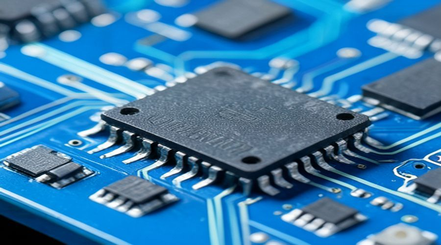

Huawei's Ascend AI: Powering China's Next-Gen AI Hardware Revolution
In the relentless global race for artificial intelligence supremacy, hardware is the bedrock upon which all advanced AI systems are built. At the heart of China’s ambition to lead this technological frontier lies **Huawei's Ascend AI** computing platform. This formidable ecosystem of chips, software, and development tools is not merely a competitor; it's a strategic national endeavor, profoundly impacting China's next-gen AI hardware revolution and reshaping the global tech landscape.
The Ascend Ecosystem: A Holistic Approach to AI
Huawei’s vision for Ascend AI extends far beyond individual chips; it encompasses a comprehensive, full-stack AI computing platform designed to empower everything from cloud data centers to edge devices. This ecosystem is anchored by the innovative Da Vinci architecture, a proprietary design optimized for AI workloads, offering unparalleled efficiency and performance. The Ascend series includes powerful processors like the Ascend 910B, a high-performance AI training chip that rivals top global competitors, and the Ascend 310, tailored for inference at the edge. Complementing this hardware is the MindSpore AI computing framework, an open-source platform that simplifies AI model development, training, and deployment. MindSpore provides a unified programming experience across different scenarios, supporting both static and dynamic graphs, and ensuring seamless integration with Ascend hardware. This holistic approach ensures that developers and enterprises have access to a robust, integrated solution for diverse AI applications, from natural language processing to computer vision and autonomous driving.
Innovation Amidst Restrictions: Huawei's Strategic Resilience
Faced with unprecedented international restrictions on accessing advanced semiconductor manufacturing technologies, Huawei has doubled down on domestic innovation, making its Ascend AI platform a symbol of strategic resilience. The company has invested heavily in R&D, fostering a robust internal supply chain and collaborating with local partners to mitigate external dependencies. This has led to impressive advancements, such as the Ascend 910B, which has demonstrated competitive performance against leading AI accelerators in benchmarks, boasting significant improvements in power efficiency and computational throughput. Reports indicate that the 910B can deliver up to 256 teraFLOPS (TFLOPS) of FP16 performance, making it a formidable contender for large-scale AI training tasks. Furthermore, Huawei's commitment to the open-source MindSpore framework has galvanized a vibrant developer community within China, attracting over 1 million registered users and over 400,000 active developers by early 2026. This strategic pivot highlights Huawei's long-term vision to build a self-sufficient AI hardware infrastructure, positioning itself as a critical enabler for China's technological independence in the AI era.

Global Implications: Shifting the AI Hardware Landscape
The rise of Huawei's Ascend AI platform carries significant global implications, potentially reshaping the competitive dynamics of the AI hardware market, which has long been dominated by Western tech giants like NVIDIA. As China accelerates its domestic AI capabilities, the global market may see increased fragmentation and diversification of supply chains. Huawei's success with Ascend could encourage other nations to invest in their indigenous AI chip development, leading to a more multi-polar AI landscape. For international businesses and governments, this means navigating a more complex technological environment, where geopolitical considerations increasingly influence hardware choices and supply chain resilience. The existence of a powerful, self-sufficient Chinese AI hardware ecosystem also intensifies the technological rivalry, pushing all players to innovate faster and more efficiently. Moreover, the robust performance and growing adoption of Ascend chips within China could set new standards for AI computing, influencing future research and development directions globally as the competition fosters rapid advancements in AI processing capabilities and architectural innovations.
What Huawei's Ascend AI Means For You
For developers, businesses, and investors alike, Huawei's Ascend AI platform represents both opportunities and challenges. Developers in China and those targeting the Chinese market will find a powerful, well-supported ecosystem with the Ascend chips and MindSpore framework, enabling them to build and deploy cutting-edge AI applications. For businesses globally, understanding the capabilities and trajectory of Ascend AI is crucial for strategic planning, especially concerning supply chain diversification and geopolitical risks. Companies relying solely on Western AI hardware might need to consider alternative solutions or partnerships to maintain flexibility and resilience. Investors should watch Huawei's progress closely, as its advancements in AI hardware could significantly impact the valuations of both established semiconductor firms and emerging AI startups. Furthermore, the rise of powerful, nationally-backed AI hardware initiatives like Ascend underscores a broader trend: the increasing decentralization of technological power and the emergence of diverse, high-performance computing options across the globe. This means a more competitive, innovative, and potentially fragmented future for AI development.
Conclusion
Huawei's Ascend AI is more than just a product line; it is a testament to technological ambition and a critical driver of China's next-gen AI hardware revolution. By building a comprehensive, vertically integrated ecosystem from chips to software, Huawei is not only ensuring its own survival but is also laying the groundwork for China's sustained leadership in artificial intelligence. As the global technological landscape continues to evolve, the impact of Ascend AI will be felt far and wide, influencing everything from data center infrastructure to autonomous systems. Staying informed about these developments is essential for anyone looking to navigate the future of AI. Explore the latest advancements in AI hardware and software on AI Profit Hub to understand how these innovations can drive your next big project. The future of AI is being built today, and Huawei's Ascend AI is undeniably a cornerstone of that construction.